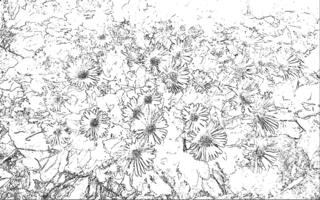

On trouve sur cette page une présentation de l'effet détection de contours
Cliquer sur une vignette pour l'agrandir...
def contour(image0):
""" reçoit une image (couleur ou niveaux de gris) et renvoie
l'image noir et blanc avec la mise en évidence des contours"""
width, height = image0.size
image1 = Image.new('L',(width,height),0)
datas = image0.load()
seuil = 30 # réglage du seuil de "contraste"
d = image1.load()
for l in range(height-1):
for c in range(width-1):
if distance(datas[c,l],datas[c+1,l])>seuil or distance(datas[c,l],datas[c,l+1])>seuil :
d[c,l]=0
else :
d[c,l]=255
return image1